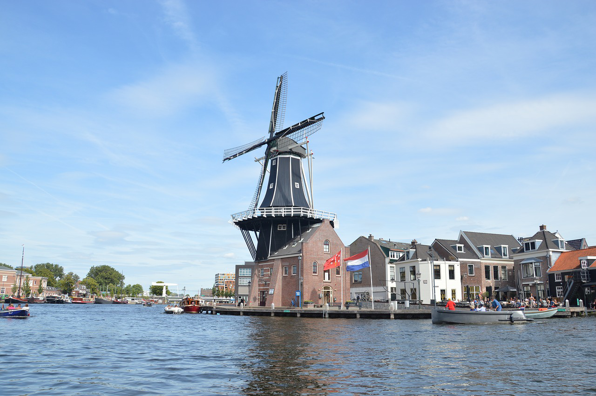
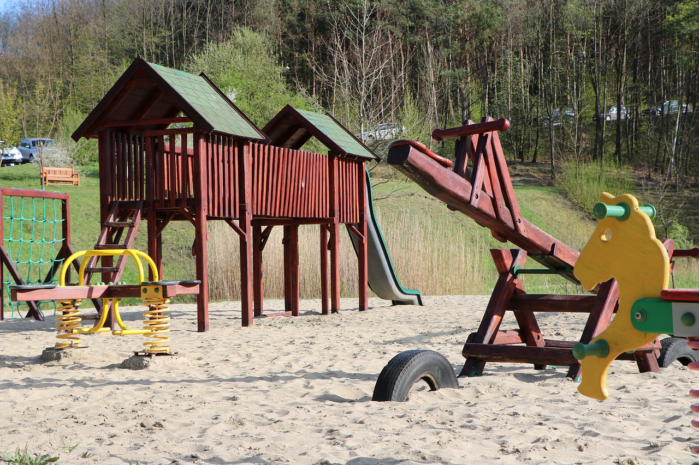

Wat doet Haarlem voor de jeugd?
De stad Haarlem biedt verschillende leuke uitjes óók voor ouders met hun kinderen.
Haarlem is een bruisende stad vol restaurants, winkels en leuke activiteiten. Het publiek dat er komt spreekt meestal jongeren en adolecenten aan. Maar wist je dat er
ook veel leuks te doen is voor famillies? Wil jij met je kleintje op pad, maar weet je niet waar in Haarlem? Lees dan verder...

Dit is een sfeer impressie van Haarlem. Het lijkt nog niet al te kindvriendelijk niet waar? Schijn bedriegt!
Leuke dingen in en rondom Haarlem voor de kleintjes
- Sportclubs
- Speeltuinen
- Kinderboederijen
Sportief je kind aanmoedigen!
Laat je zoon of dochter op een sportieve hobby gaan. Vaak vinden kinderen het ontzettend leuk om in de weer te zijn met een bal.
Maar sommige kinderen houden juist van dansen, klimmen of zelfs stoeien. Kom erachter wat je kind leuk vind om te doen! Een
hobby voor je kleintje geeft veel voordelen: meestal geeft het meer zelfvertrouwen, meer sociale vaardigheden en nog veel meer.
Heb je er weleens over nagedacht om je kind op een hobby te doen, maar weet je nog niet wat? Lees hier meer over:
"De leukste hobby's voor jeugd."
Speeltuinen genoeg!
Wie denkt dat Haarlem geen plek heeft voor kinderen heeft het mis. Er zijn leuke speeltuinen waar kinderen zich uren kunnen vermaken. Zie jij je
kind al klimmen, springen en zandkastelen bouwen, terwijl jij lekker uitrust met een koffie op het terras? Er zijn genoeg
speeltuinen in en rond om Haarlem. Voor sommige speeltuinen is het wel handig als je beschikt over een auto. Omdat sommige speeltuinen zo groot zijn
kunnen ze niet midden in de stad liggen natuurlijk. Het is belangrijk dat je je reis goed voorbereidt. Neem wat eten en drinken mee en
zorg dat je kind kleren aan heeft die vies mogen worden.
De leukste speeltuinen in Haarlem vind je:
hier.

Dit is een sfeerimpressie van een speeltuin, niet een daadwerkelijke speeltuin in Haarlem
Gezellig naar de kinderboederij!
Iedereen in nederland heeft het vroeger weleens meegemaakt. Op een heerlijke zomerse dag ging je met je ouders naar de kinderboederij.
Zeker in de lente, want dan waren net de lammetjes geboren. Als je gelukt had mocht je er van de boer eentje vasthouden en aaien.
Gun je kleintje hetzelfde plezier en laat ze ontdekken hoe lief de diertjes allemaal zijn!
Samen een gezellig dag je uit om de geitjes, konijnen en lammetjes te aaien? Is jouw zoontje of dochtertje gek op dieren? Dan moeten jullie
samen naar de kinderboederij. Haarlem heeft 3 grote kinderboedereijen. Wil jij weten welke kinderboederij voor jouw het dichste bij is? En
wil je alle kinderboedereijen in en rond om Haarlem zien?
klik hier!